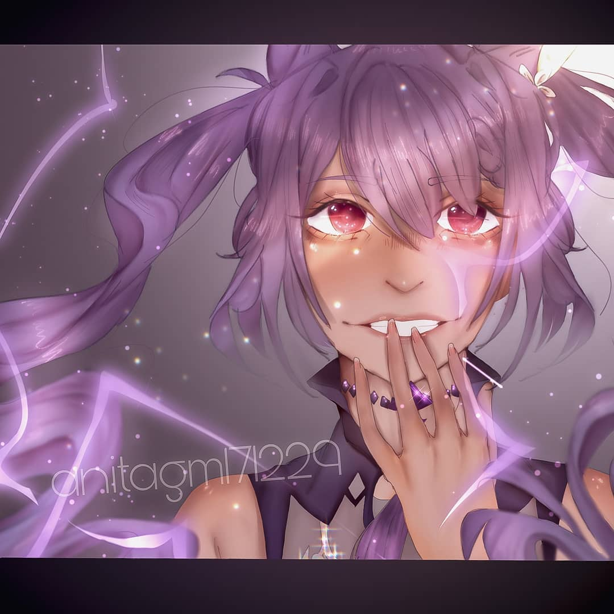
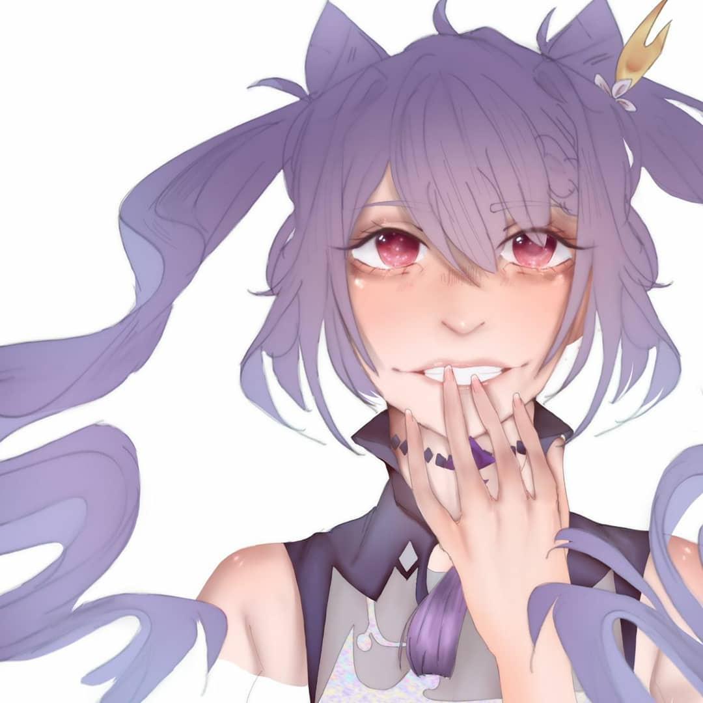
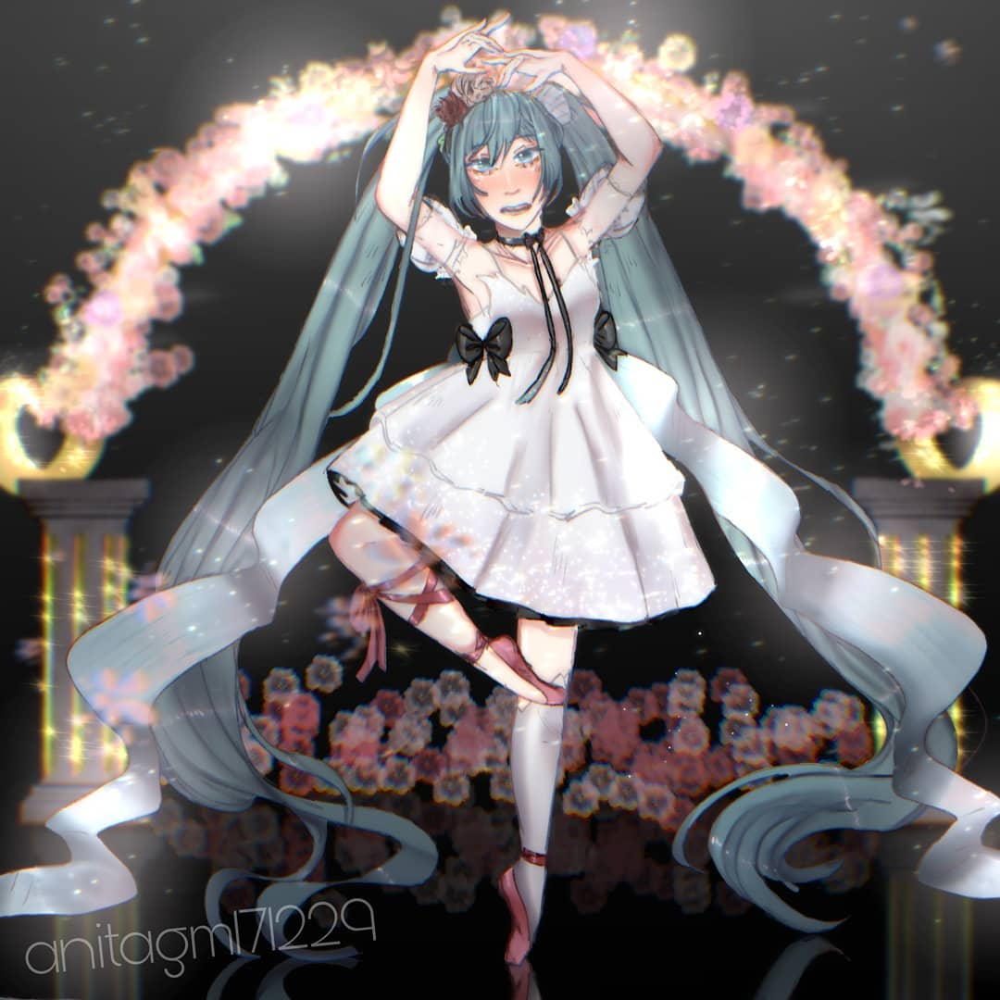
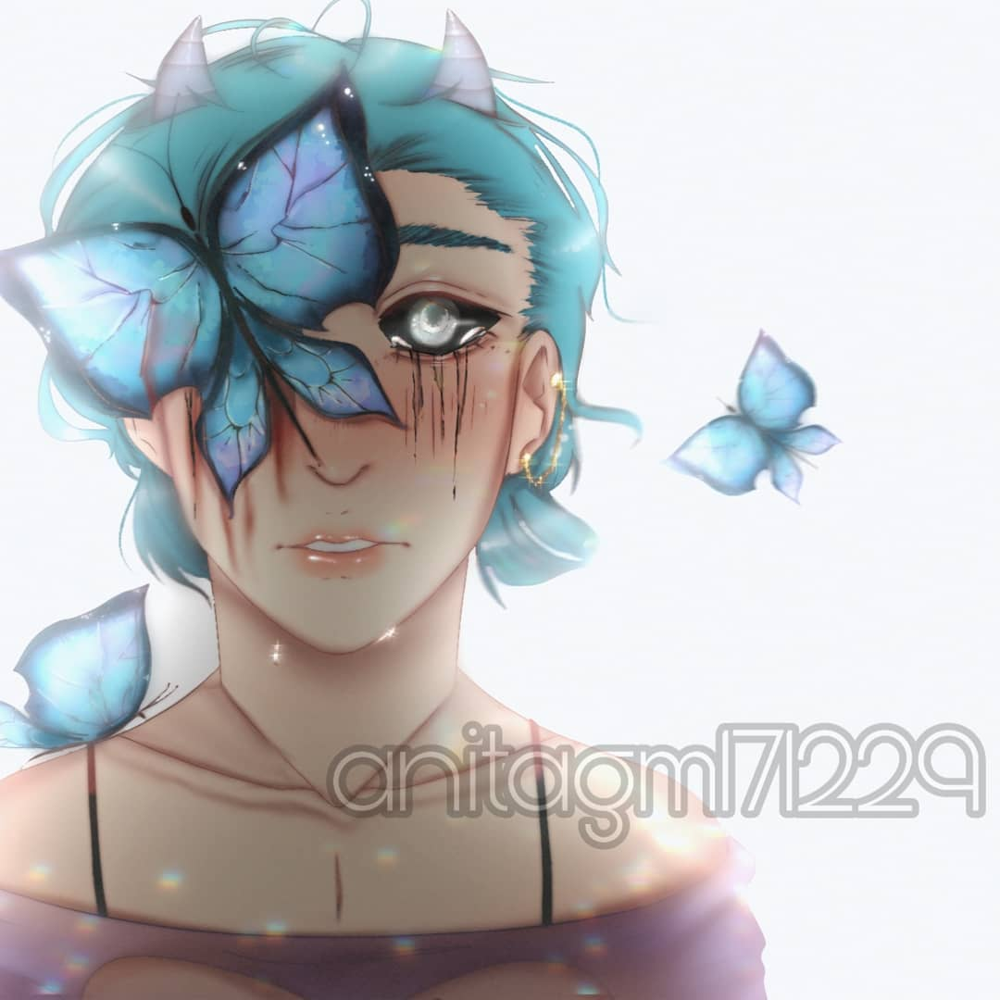
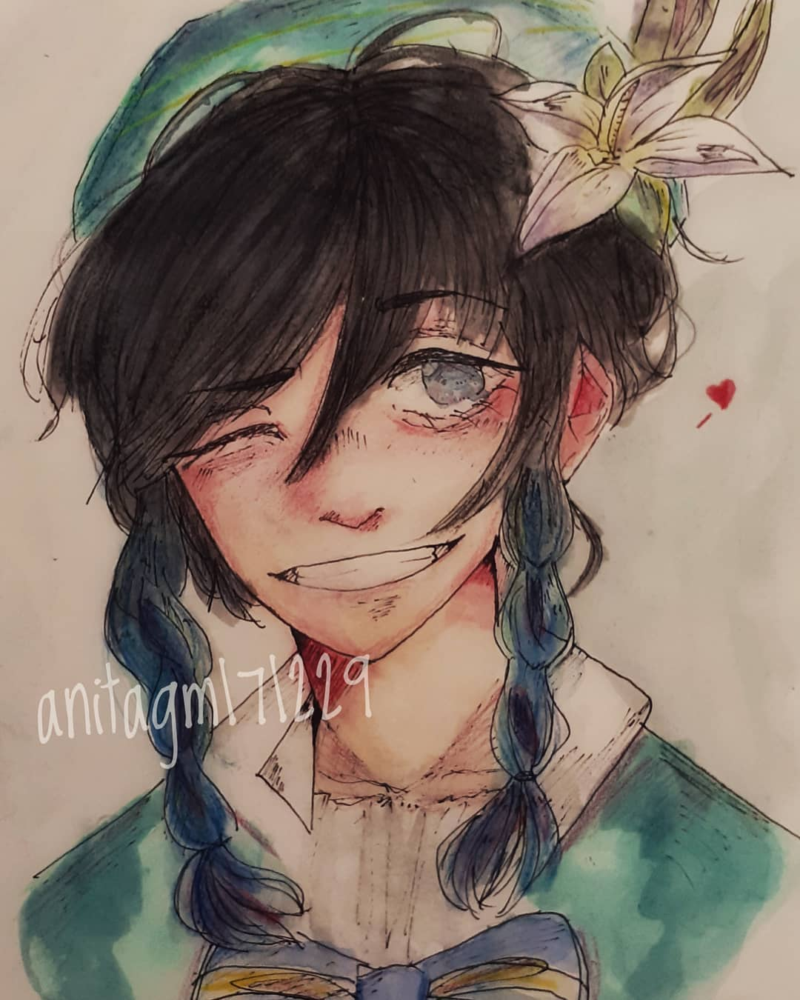
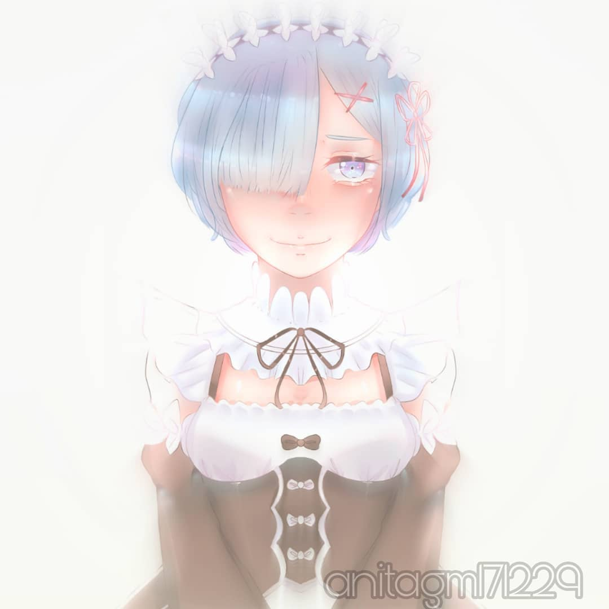
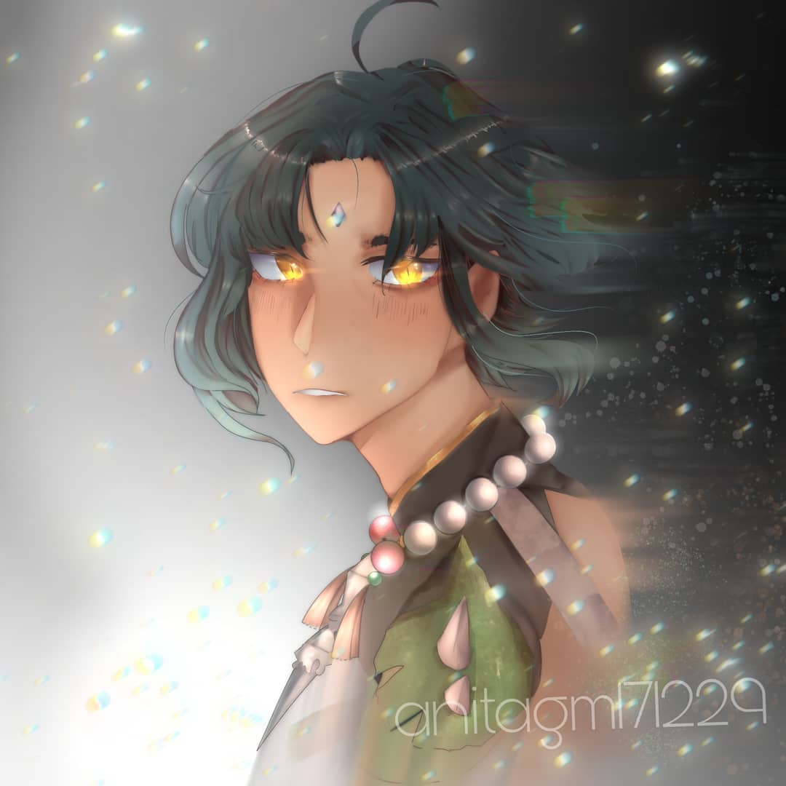

♡ DIBUJOS ♡
Aquí puedes ver la mayoría de los dibujos que hice hasta el día de hoy, si quieres verlos todos puedes visitar mi cuenta de Instagram: @anitagm171229 ♡

Este es uno de mis dibujos más recientes y que más me gustan✧

Aquí muestro el proceso del dibujo anterior❀

Este dibujo tiene un poquito más de tiempo, pero aún así me sigue gustando mucho ♡

Otro de mis dibujitos favoritos, especialmente por las mariposas ♡ Este personaje lo he creado yo, espero os guste también su diseño!

Aunque dibuje la mayoría de veces en digital, también suelo dibujar en tradicional ! Me inspiré en un personaje de un videojuego✧

Este es un dibujo de hace mucho tiempo pero me sigue gustando mucho✧

×